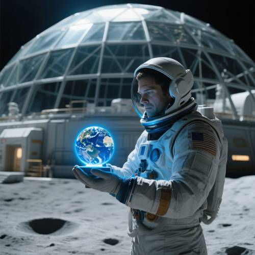
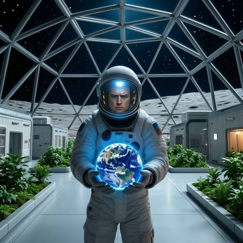
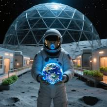
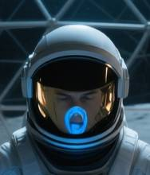
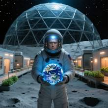
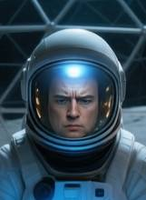
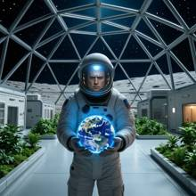
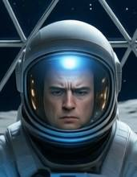
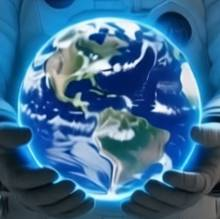

World Knowledge — An astronaut stood under the glass dome of the huge lunar base, holdin
An astronaut stood under the glass dome of the huge lunar base, holding a miniature, blue-emitting model of the earth in his hand, with a very focused expression.

Direct — one call, no iteration

Continuum — Qwen3.8-27B + Qwen-Image
Judge — Direct
PASSWorld Knowledge — The image shows an astronaut holding a small, blue, glowing spherical object that has the continents and oceans of Earth depicted on it, consistent with a 'model of the earth'.
FAILRelationship - Inclusion — The astronaut is depicted standing on the lunar surface with a glass dome in the background. The astronaut is not located inside or under the glass dome, as the prompt specifies.
PASSAttribute - Size — The lunar base in the background is a large structure, appearing 'huge' relative to the astronaut. The model of the Earth is small enough to be held in the astronaut's hands, correctly depicting it as 'miniature'.
Judge — Continuum
PASSWorld Knowledge — The image features a glowing, spherical object held by the astronaut. This object has blue areas representing oceans and green/brown areas representing landmasses, consistent with a model of the Earth.
PASSRelationship - Inclusion — The image depicts an astronaut standing inside a facility. Overhead is a large geodesic dome structure made of metal frames and transparent panels, through which the lunar surface and starry sky are visible. The astronaut is positioned under this dome.
PASSAttribute - Size — The lunar base, which includes the large dome and several building-like modules within it, appears vast in scale, fitting the description of 'huge'. The model of the Earth is small enough to be held in the astronaut's two hands, consistent with the term 'miniature'.
What the agent did
Thinking
The user is asking for an image: "An astronaut stood under the glass dome of a massive lunar base, holding a miniature Earth that emits blue light in his hand, with a very focused expression." Let me try generating this with qwen-image. I should fill in visual details. Let me think about the composition: - Astronaut standing under a glass dome - Huge lunar base — the dome should be huge, with structural ribs, habitat buildings inside/behind - Holding a miniature Earth emitting blue light in his hand — a small glowing blue globe in his hand - Very focused expression — since the helmet visor is on, it should be visible through the visor. Maybe show his face through the helmet visor, with a concentrated expression. Let me write a detailed prompt: "A cinematic full-body shot of an astronaut standing under the massive glass dome of a lunar base. The transparent geodesic dome with steel ribs stretches over the habitat complex, and lunar craters are visible outside. Inside the dome, illuminated modular buildings and walkways. The astronaut stands in the center foreground holding a small miniature Earth glowing with a deep blue light in his open palm, the small globe illuminated in blue and emitting soft light that reflects onto the face of his visor. He gazes down at the Earth with a very focused, serious expression, visible through the reflective helmet visor. Moonlight and the blue glow of the Earth, cinematic lighting, photorealistic, dramatic atmosphere." Let me generate with qwen-image. Then inspect, and edit if necessary. Mark the best. Let me make the first call.
Step 1 — `generate_image`
{
"model": "qwen-image",
"prompt": "Cinematic full shot of a single astronaut standing beneath the enormous glass dome of a lunar base. The vast transparent geodesic dome with steel ribs spans over an illuminated habitat complex \u2014 modular buildings, walkways, green plant bays, and glowing lights inside the dome \u2014 with the gray cratered lunar surface and black star-filled sky visible beyond the glass. The astronaut stands in the center foreground in a detailed white EVA suit, looking down at a miniature planet Earth cradled in his open hands. The tiny globe glows with deep blue light, blue emission reflecting on his helmet visor. His face is visible through the reflective visor, showing a very focused, serious, concentrated expression. Dramatic cinematic lighting, blue glow from the miniature Earth mixing with warm interior base lights, photorealistic, high detail."
}
Result img_0

Thinking
Let's inspect the result. The image shows an astronaut beneath a glass dome, holding a glowing blue Earth, with a focused expression visible through the visor. There's one obvious problem: there's a blue glowing object inside the helmet — it looks like a mouthpiece or something inside the helmet, glowing blue (like a glowing blue circle near the face). It looks like a strange artifact — a blue glowing circle on the face/visor area, could be a reflection of the Earth, or a weird mouth filter. Let's try zooming in to check the face area. Also, the astronaut appears to be standing outside the dome (on the lunar surface), not "beneath" the dome — the prompt says "an astronaut standing beneath the glass dome of a giant lunar base." In the image, the astronaut is standing on the open lunar surface in front of the base, with buildings visible outside the dome (which is odd — buildings should be inside the dome). Hmm, actually, the habitat buildings appear to be outside the dome, on the lunar surface. This is a compositional issue, but it could also be interpreted as an exterior structure. The main requirement: "standing beneath the glass dome" — the astronaut is in front of the dome, standing on the lunar surface. Ideally he should be standing inside the dome. That said, the glass dome is behind him, and he's positioned in front of it, on the moon's surface outside the dome. Let's try inspecting the face area to check the blue artifact.
Model
The first generation is close, but I notice a suspicious glowing blue blob inside the helmet near the face. Let me zoom in to verify before editing.
Step 2 — `inspect_region`
{
"image": "img_0",
"roi": "the astronaut's helmet and face",
"padding": 0.2
}
Result img_1

Thinking
Confirmed: there's a glowing blue circular artifact in the mouth/face area inside the helmet — it looks like a glowing blue circle where the mouth should be. This is an artifact. The face itself is visible, and you can tell the expression is focused, but the blue glowing circle at the mouth position is unnatural. I should edit it to remove the blue glow on the face. The blue glow on the visor (from the Earth) is fine and actually desirable, but the bright blue circle right on the mouth is a mistake. Let's use edit_image: "Remove the glowing blue circle from the astronaut's mouth inside the helmet, and instead show a naturally focused face with lips slightly parted in concentration. Keep the soft blue light reflection from the Earth on the visor." I'll go ahead and execute that edit.
Model
Confirmed — there's an incorrect glowing blue circle right on the astronaut's mouth inside the helmet. I'll fix this.
Step 3 — `edit_image`
{
"image": "img_0",
"model": "qwen-image",
"prompt": "Remove the bright glowing blue circle on the astronaut's mouth inside the helmet. Show his real face through the visor with a natural, very focused expression \u2014 brows slightly furrowed, mouth closed in concentration. Keep the soft blue reflection light on the visor from the glowing Earth below. Keep everything else in the image exactly the same."
}
Result img_2

Thinking
The blue circle on the mouth has disappeared. Currently, the face is visible through the visor with a focused, furrowed-brow expression. However, I can see a bright white-blue glowing spot on the forehead area inside the helmet — let me zoom in to check. It might be a reflection on the visor (plausible), or it could be another artifact. Also, the Earth is still glowing blue in his hands, and the dome is behind him. Let me try zooming into the helmet area.
Model
The mouth artifact is gone. Let me verify the face area is clean now — there's a bright spot on the forehead that may be a reflection or another artifact.
Step 4 — `inspect_region`
{
"image": "img_2",
"padding": 0.2,
"roi": "the astronaut's helmet and face"
}
Result img_3

Thinking
The face currently shows a very focused expression — furrowed brow, serious. There's a bright light in the forehead area inside the helmet — this could be interpreted as the helmet's headlamp/light, or a strong reflection on the visor. It looks somewhat like a glowing spot at the upper forehead, which is passable as a visor reflection, but it's a bit intense. Actually, looking more carefully, it looks like a bright light at the forehead position inside the helmet — it could be read as a helmet lamp. Hmm, it might look a bit strange. Many helmet visors have specular highlights. It's borderline, but acceptable as a reflection of a light source on the visor. Let me evaluate the whole image against the prompt: 1. ✅ Astronaut 2. ✅ Under the glass dome of a huge lunar base — the dome is behind him, but he's standing on the lunar surface outside/in front of the dome. The prompt says "standing under the glass dome." In the image, the astronaut is standing on the open lunar surface with the dome behind him. He's not under the dome. Hmm. This is a deviation. The dome is behind him and he's in front of it. "Under the glass dome" implies he's inside it. But compositionally, this reads as "in front of the base" rather than "under the dome." Should I fix this? I could edit to move him inside the dome. That's a bigger structural change. Let me think about how much it matters. The prompt: "An astronaut stood under the glass dome of a huge lunar base." The current image shows the astronaut standing in front of the dome, outside of it, on the lunar surface. The base buildings are also on the outside. Options: a) Edit so that the astronaut is inside the dome (move him inside, and have the dome encompass him with the base interior behind him). This is a significant change — the model would need to restructure the scene. b) Accept it as is — the dome is a dominant background, and the scene reads as "an astronaut at a lunar base with a glass dome." Many people would accept this. The benchmark is about matching the prompt. "Under the glass dome" is a specific spatial relationship. In img_2, the astronaut is clearly outside the dome (the lunar ground with craters, the dome behind). It reads as "in front of the dome." I think I should try an edit to place him under/inside the dome. How to do it: edit_image with a prompt like: "Reposition the scene so the astronaut is standing inside the glass dome, on the base's interior floor, with the interior of the dome and habitat buildings surrounding him; the transparent dome and ribbed structure visible above and around him, the lunar surface visible through the glass." This is a major change, and the model might fail or distort things. Alternative: a more targeted approach — the issue is that the ground is lunar surface outside the dome. If I make the ground under him the base's interior floor (smooth deck with walkways) and have the dome envelope him, that would work. Let me try an edit: "Move the astronaut so he is standing inside the glass dome: replace the open lunar ground around him with the base's smooth interior floor and walkways, and let the dome's glass and ribs arch over him so he is enclosed inside the dome, with the habitat interior visible behind him." Risk: the whole image might get messed up. But it's worth trying once. If it fails, keep img_2 (mark best). Also, about the light on the forehead: I could try to soften it in the same edit, but... multi-change prompts cause leaks. Better to do one edit at a time. The light on the forehead is borderline acceptable (a reflection). Let me focus on the dome issue first. Actually, let me reconsider: is it worth it? The prompt is "under the glass dome of a huge lunar base." The current image: a huge glass dome in the background, the astronaut in the foreground. Honestly, many renderings of this prompt place the astronaut in front of the dome. But "under" clearly means inside. The buildings outside the dome are also unnatural (habitat modules are usually inside the dome). Let me try an edit to put him inside the dome. I'll give clear instructions.
Model
The face is now clean and focused. There's one remaining deviation from the prompt: the astronaut is standing on the open lunar surface in front of the dome, but the prompt says he's *under* the glass dome. Let me try to place him inside the dome.
Step 5 — `edit_image`
{
"image": "img_2",
"model": "qwen-image",
"prompt": "Reposition the scene so the astronaut is standing inside the glass dome: surround him with the base's smooth interior floor and walkways instead of open lunar ground, and let the transparent dome's glass and steel ribs arch over and around him so he is clearly enclosed within the dome. The habitat interior and green plant bays should be visible around and behind him, and the gray cratered lunar surface and starry sky should be seen through the glass above. Keep the astronaut, his suit, the glowing blue miniature Earth in his hands, and his focused face exactly as they are now."
}
Result img_4

Thinking
Currently, the astronaut is standing under a glass dome—dome ribs are visible overhead, he's on the interior walkway floor, the plant bays are on both sides, and the lunar surface and stars are visible through the glass. This is a big improvement in matching "under a huge lunar base's glass dome." Checking the details: 1. ✅ Astronaut under the glass dome 2. ✅ Huge lunar base (interior of the dome with the base structures) 3. ✅ Holding a miniature Earth that glows blue in his hand 4. ✅ Very focused expression (furrowed brow, serious) The light spot on the forehead is still there, but it reads as a reflection on the visor/helmet light—within acceptable range. Let me check the face area and the Earth once more at high resolution to make sure no artifacts have been introduced by this edit. Also, I'll check the Earth's glow. Let me quickly inspect the full-resolution crops of the face and the Earth.
Model
This now matches the prompt well — he's enclosed under the dome with the interior walkway and plant bays around him. Let me do a final detail check on the face and the Earth.
Step 6 — `inspect_region`
{
"image": "img_4",
"padding": 0.15,
"roi": "the astronaut's helmet and face"
}
Result img_5

Step 7 — `inspect_region`
{
"image": "img_4",
"padding": 0.1,
"roi": "the glowing blue globe in the astronaut's hands"
}
Result img_6

Thinking
Both detailed checks look good: - Face: focused, furrowed brow, serious expression. The bright spot on the forehead is a specular reflection on the visor — natural. - Earth: a beautiful miniature Earth glowing blue, cradled in his hands. The continents look Earth-like (North America, Africa, South America are recognizable). The blue glow is strong. All the elements of the prompt are present: 1. ✅ Astronaut 2. ✅ Under a glass dome (dome ribs overhead, interior surroundings) 3. ✅ A giant lunar base (interior of the base with walkways, plant bays, habitats) 4. ✅ A miniature Earth glowing blue in his hand 5. ✅ A very focused expression This is a good result. I'll mark img_4 as the best and stop. This is a good stopping point — no need to chase further marginal improvements.
Model
Both details have been confirmed: the focused expression is clearly visible through the visor (the forehead spot is a natural specular reflection), and the miniature Earth is beautifully rendered in his hands, glowing blue. All the elements of the prompt are present.
Step 8 — `mark_best`
{
"image": "img_4",
"reason": "Astronaut stands under the glass dome of a lunar base, enclosed inside it with interior walkways and plant bays; holds a glowing blue miniature Earth; face through the visor shows a very focused expression. The earlier helmet mouth artifact was removed and the composition now matches the prompt's spatial relationship."
}
Thinking
Complete. Marked the best image (img_4). Summarizing concisely.
Model
Done. The final image (marked as best) shows the astronaut standing inside the glass dome of the lunar base, with the geodesic dome's ribs arcing overhead and habitat walkways and plant bays around him. He cradles a miniature, blue-emitting Earth that glows vividly in his open hands, and his face — visible through the visor — shows a deeply focused, concentrated expression. Two fixes were needed along the way: an erroneous glowing blue circle on his mouth in the first render was removed, and the composition was adjusted so he stands *under* the dome rather than in front of it.